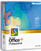

Technook
Good Computer Habits
by:
Kelvin Young
This
is intended to be a list of useful habits when using a computer.Some
of these involve avoiding practices that generally work, but
can occasionally cause lost time and information.
SAVE SMARTLY Don't save files to your desktop, especially
on a pc.The desktop is handy, but the operating system doesn't
always maintain it in a predictable and safe way. It's safer
if you create folders on normal disks (for instance, in your
windows home directory), and then put shortcuts to those folders
on your desktop. This gives you the convenience of the desktop
without the hazards of actually storing files there.If you
are working on anything
on a computer for more than five minutes, save your work.
IMPORTANT FILES If a file is important, save it in multiple
places.If you really can't afford to lose something, save
it on your local hard disk and on a server. It doesn't hurt
to also keep a current printout and a copy on a floppy or
zip disk. Removable disks such as floppies and zips are notoriously
unreliable, so particularly don't keep the only copy of anything
important on one of them.
@
DONT FORGET THE @ Always put @destination
in an e-mail address.A lot of people have gotten used to EECS
systems automatically sending mail to the right place with
just the user name. This will usually work, but if it doesn't,
your mail may be delivered to an unexpected place and just
never read. So it's safer to always mail
to janp@eecs rather than just janp.
INSTALLING Don't purchase, install or run software on
your computer unless you have checked it with your system
administrator.This includes programs sent as e-mail attachments
or downloaded from the internet. Even with up-to-date anti-virus
software,there's always a risk with installing or running
a new piece of software. Also, software can cause conflicts
and problems that are easier for a system administrator to
fix if he or she is involved from the beginning.
?
QUESTIONS ?
If you have a question or something isn't working as you'd
expect, ask your system administrator.It's always better to
learn that something is an ignorable quirk than to find out
later that there was a way to avoid trouble, had you but known.
Some
Technology Updates
by:
Nicasio Bonao

Microsoft Office XP -
offers a higher level of reliability, data recovery, and security
while making it simpler for users to access information on
the Web. The following noted parameters are:
smart tags = a set of buttons that are shared across
the Office applications. They appear when a user needs them
and give options to change an action or error.
Task panes = users can perform searches, open or start
a new document, view the contents of the clipboard, format
documents and presentations, or even access translation and
template services via the Web.
Source: ICS.product.update
|